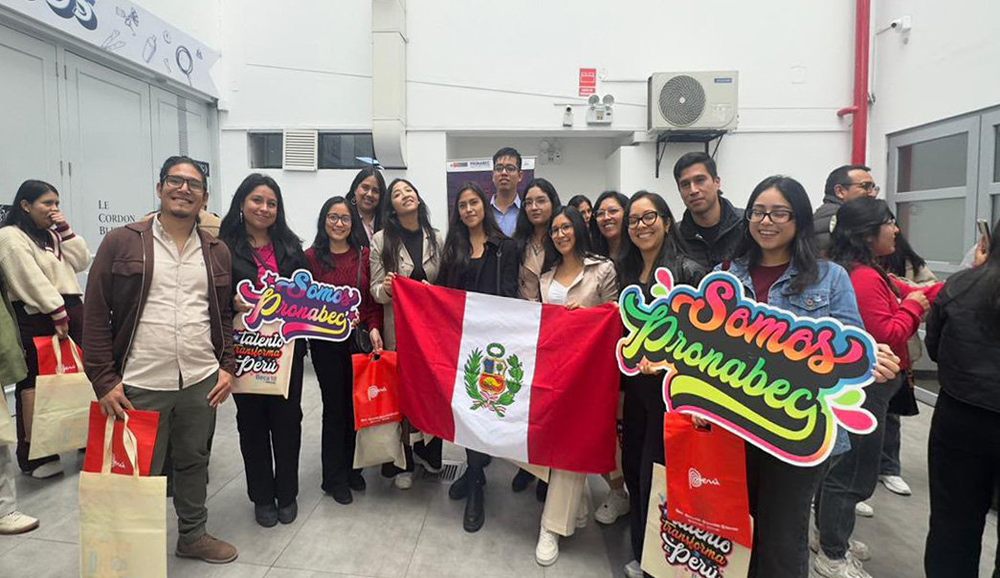
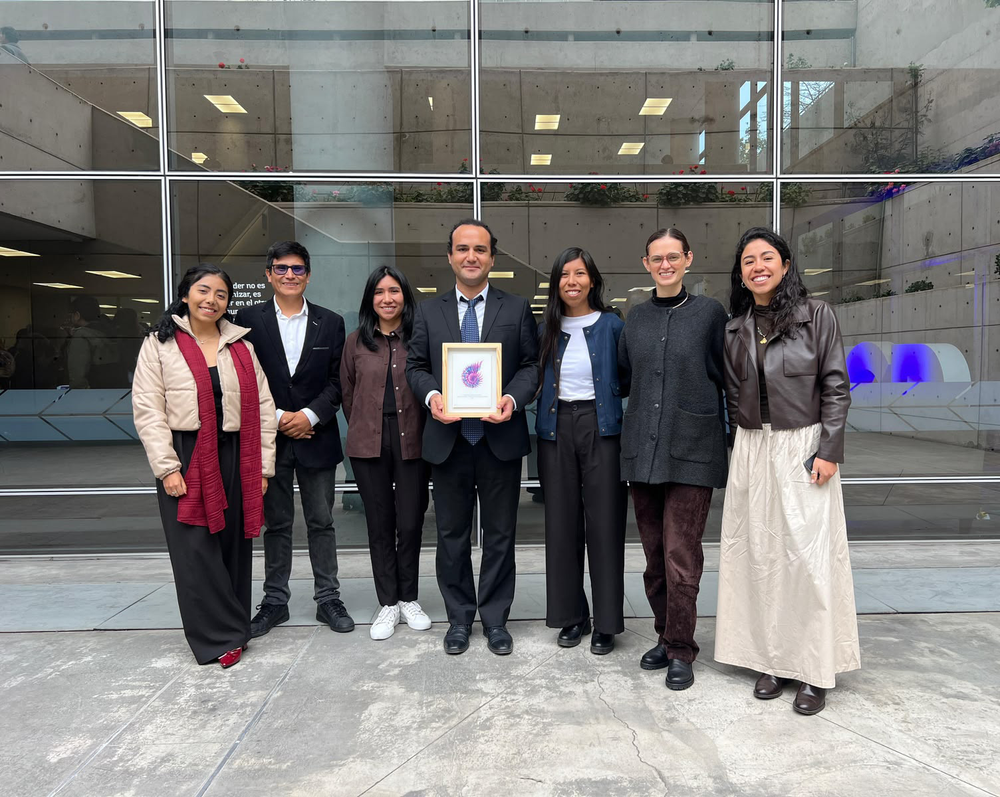
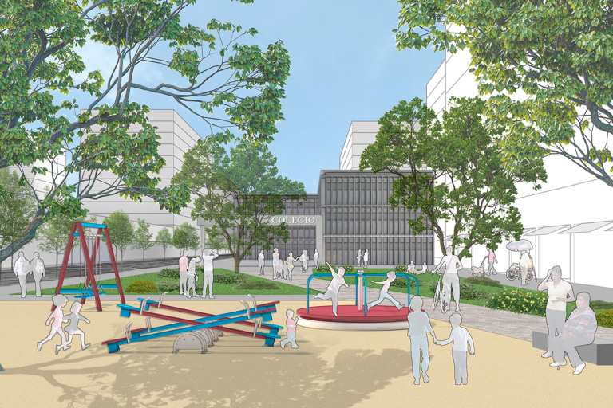
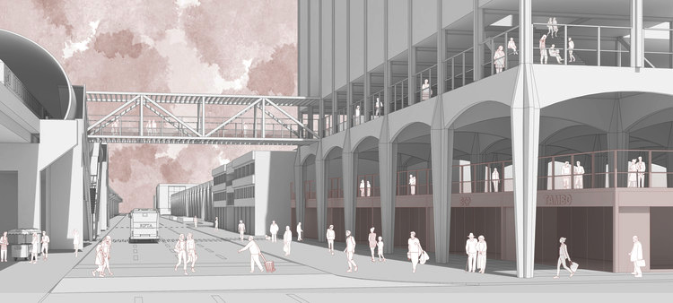
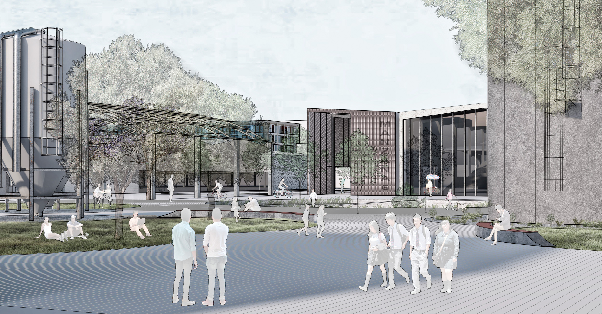

2025
Bicentennial Generation Scholarship
PRONABEC · Peru
Postgraduate scholarship awarded by PRONABEC to pursue the MSc Urban Spatial Science at University College London.

2025
PRONABEC · Peru
Postgraduate scholarship awarded by PRONABEC to pursue the MSc Urban Spatial Science at University College London.

2025
Faculty of Architecture and Urbanism · PUCP
Recognition for teaching excellence at the Faculty of Architecture and Urbanism of the Pontifical Catholic University of Peru.

2023
The Future of Central Lima · BiaLima
Recognition for an urban proposal developed for the El Futuro de Lima Centro ideas competition.

2020
Manifiesto · Post-COVID Market Competition
Second-place proposal exploring spatial strategies for markets in response to the COVID-19 pandemic.

2019
The Urban Factory · Architecture Thesis
Architecture thesis recognised as outstanding, exploring the regeneration of the industrial corridor between Lima and Callao.
